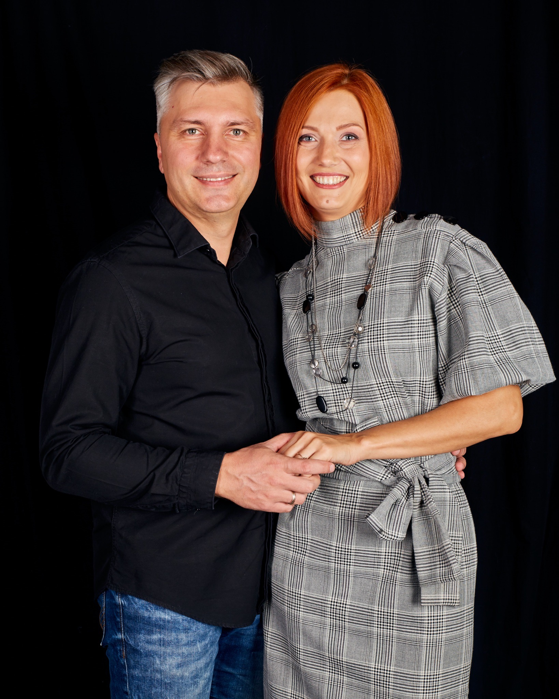

Meet the pastors
Пастор
Сергей и Нина Гороховы

Our story
Сергей и Нина Гороховы
Мы верим, что церковь начинается с отношений. Поэтому нам хочется не просто рассказать о себе, а познакомиться с вами.
Более 20 лет наша жизнь связана со служением людям и развитием церквей. За это время мы помогали людям расти в вере, строить крепкие семьи и находить своё место в жизни и служении.
Мы женаты 25 лет и воспитываем троих детей. Поэтому семья, отношения и воспитание детей для нас – не просто темы, о которых мы говорим, а важная часть нашей собственной жизни.
Сегодня мы развиваем церковь в Северном Хьюстоне. А собственный переезд в другую страну помог нам ещё глубже понять, как важно оказаться среди людей, которые тебя знают, поддерживают и рядом с которыми можно почувствовать себя дома.
Именно такую церковь мы хотим создавать здесь – открытую для людей разных стран, с настоящими отношениями, живой верой и местом для каждого.
Coffee and conversation
Будем рады познакомиться!
Если вы ищете церковь, хотите поговорить о вере, семье или просто познакомиться за чашкой кофе – будем рады познакомиться с вами лично.
Спасибо!
Мы получили ваше сообщение и свяжемся с вами в ближайшее время.